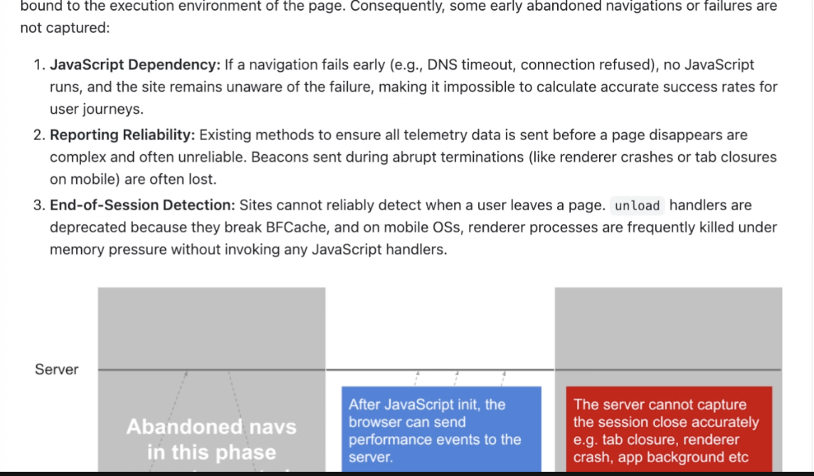
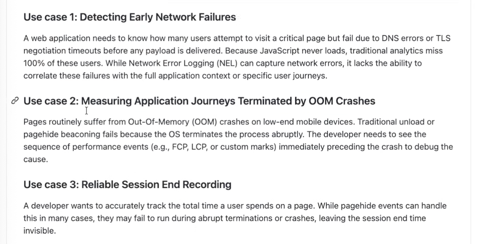
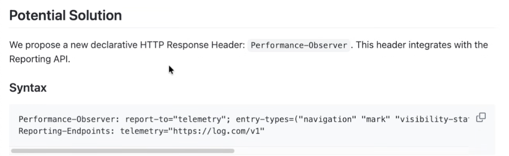
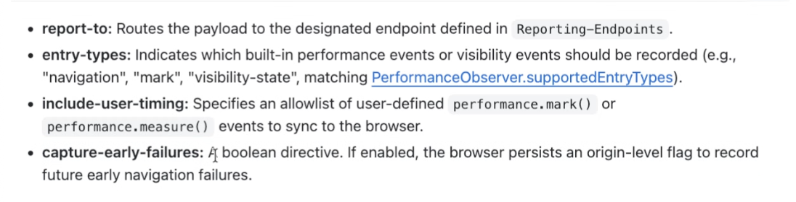
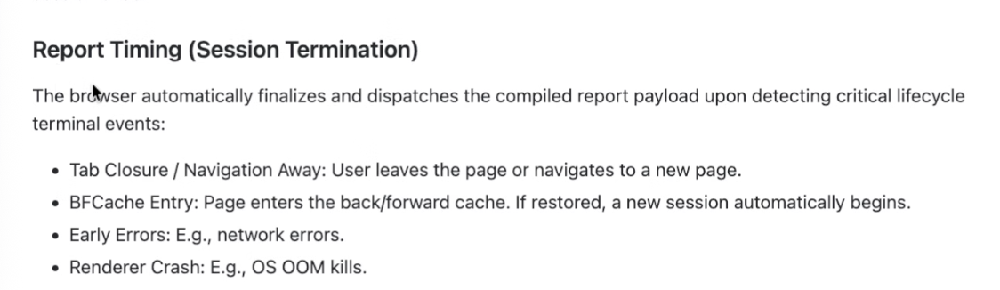
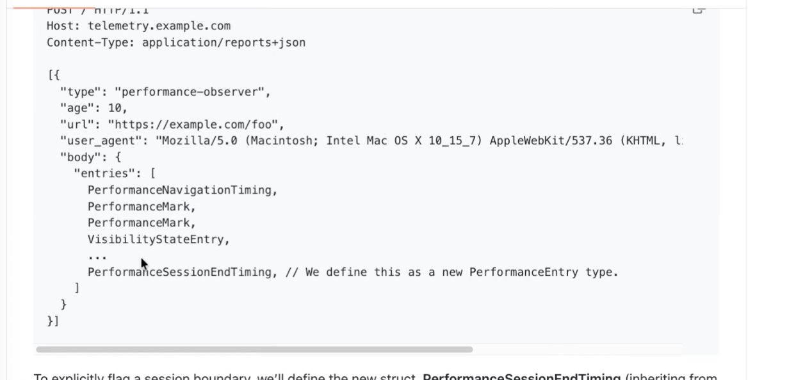
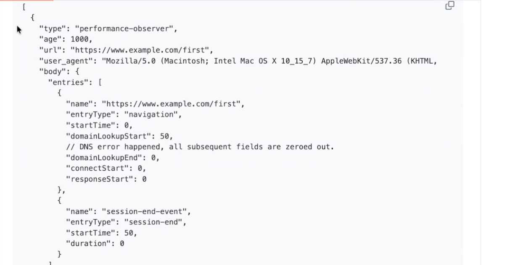
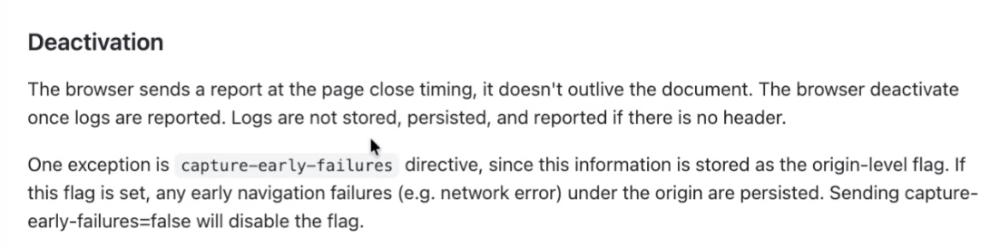
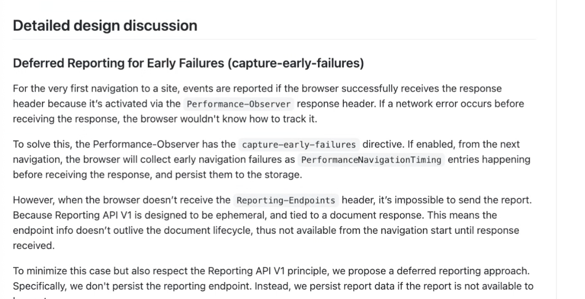
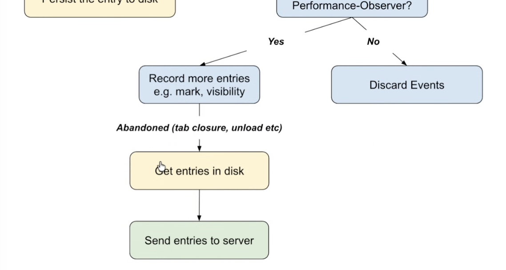

Participants
- Nic Jansma, Barry Pollard, Carine Bournez, Franco Vieira de Souza, Guohui Deng, Patrick Meenan, Philip Tellis, Sergey Chernyshev, Shunya Shishido, Thomas Bertet, Elad Alon, Dave Hunt, Bas Schouten, Joone Hur
Admin
- Next meeting: July 2nd(?), 2026
- Will decide if we have enough to talk about
- Rechartering: End of feedback is 01 July 2026
Minutes
Declarative Performance Observer (Shunya)
- https://github.com/explainers-by-googlers/declarative-performance-observer
- Shunya: Allows us to get full lifecycle of user journey from navigation start to page unload
- … Unlike native apps, web platform doesn’t have capabilities to track user journeys
- … If the navigation request doesn’t reach to the server, or the response is not beaconed, there is no way to record the abandoned navigations to the server

height: 670.00px; margin-left: 0.00px; margin-top: 0.00px; transform: rotate(0.00rad) translateZ(0px); -webkit-transform: rotate(0.00rad) translateZ(0px);" title="">- … Beacons can be HTTP requests, however if the user closes the tab or the browser process is crashed/closed by the OS, the beacons may not arrive
- … Currently hard to detect the end of sessions for page unload – unload handlers are frequently killed by OS
- … Send PerformanceEntry via the Reporting API
- … Capture journeys from navigation start to close
- … We’ll have some room to accept custom events
- … Automatically and reliably send data to the server
- … non-goals to replace PerformanceObserver or remove existing APIs like NEL or Crash Reporting
- … Use cases

height: 610.00px; margin-left: 0.00px; margin-top: 0.00px; transform: rotate(0.00rad) translateZ(0px); -webkit-transform: rotate(0.00rad) translateZ(0px);" title="">- … API shape

height: 344.00px; margin-left: 0.00px; margin-top: 0.00px; transform: rotate(0.00rad) translateZ(0px); -webkit-transform: rotate(0.00rad) translateZ(0px);" title="">- … Match to supported entry-types
- … Options to include performance marks/measures or not

height: 280.00px; margin-left: 0.00px; margin-top: 0.00px; transform: rotate(0.00rad) translateZ(0px); -webkit-transform: rotate(0.00rad) translateZ(0px);" title="">- … Option to allow the browser to know that it should capture early navigation failures

height: 326.00px; margin-left: 0.00px; margin-top: 0.00px; transform: rotate(0.00rad) translateZ(0px); -webkit-transform: rotate(0.00rad) translateZ(0px);" title="">- … Report format is in JSON

height: 594.00px; margin-left: 0.00px; margin-top: 0.00px; transform: rotate(0.00rad) translateZ(0px); -webkit-transform: rotate(0.00rad) translateZ(0px);" title="">- … Example payload

height: 632.00px; margin-left: 0.00px; margin-top: 0.00px; transform: rotate(0.00rad) translateZ(0px); -webkit-transform: rotate(0.00rad) translateZ(0px);" title="">- … Deactivation after page unloads

height: 274.00px; margin-left: 0.00px; margin-top: 0.00px; transform: rotate(0.00rad) translateZ(0px); -webkit-transform: rotate(0.00rad) translateZ(0px);" title="">- … On failed navigation, on next navigation they will send failed timing immediately after next navigation starts

height: 614.00px; margin-left: 0.00px; margin-top: 0.00px; transform: rotate(0.00rad) translateZ(0px); -webkit-transform: rotate(0.00rad) translateZ(0px);" title="">
height: 608.00px; margin-left: 0.00px; margin-top: 0.00px; transform: rotate(0.00rad) translateZ(0px); -webkit-transform: rotate(0.00rad) translateZ(0px);" title="">- … Actively working on prototyping this API
- … Want to start a Chrome Origin Trial in ~Aug-Sep
- Nic: Not understanding how this is different from NEL?
- Shunya: There’s a section about this. Basically that is limited to network errors.
- If the user navigates away before the beacon happens, NEL is not useful.
- Also NEL is just network errors. This provides the whole user journey from navigation start, including other performance entries.
- Nic: So if I’m understanding correctly, NEL only captures up until ??. What is the end point this captured up until?
- Shunya: For example, this allows beaconing when JavaScript has not initiated yet (e.g. errors after NEL’s area of responsibility but before JS).
- Nic: OK so cases where NEL is not covering it. Have you considered extending NEL instead?
- Shunya: This includes anything in the page lifecycle.
- Nic: Maybe the “capture early failures” part could be moved into NEL? To remove this complexity from gere?
- Shunya: NEL and reporting API don’t work together yet.
- Nic: Agreed. There’s work ongoing. NEL is not likely to be deprecated.
- Nic: Can you clarify the header that will enable this is a single use header, and not cached for the origin?
- Shunya: Only “capture early failures” persists. Without that it’s not cached.
- Nic: Any appetite/way for compressing data (with gzip/zstd) to reduce bytes?
- Shunya: It just uses the existing Report API standard. Does that support this.
- Nic: OK so if we extend this, then this should theoretically support this.
- Shunya: Yes, it should report.
- Nic: Those payloads are often smaller.
- Nic: One of my concerns is with the marks/measures. That’s great, but but many sites use many of them. Is there any way to filter.
- Shunya: Yes: include-user-timing=("hero-image-loaded" "next-link-clicked")
- Nic: If you don’t specify do you get them all? Is there a wildcard?
- Shunya: For not not. We feel this is enough. But if we get feedback we need more, then can revisit.
- Nic: Can a site annotate this data anymore. For example, can we add an id, to link users across page views or other similar characteristics.
- Shunya: That brings privacy concerns. The mark() entries can have a detail entries.
- Nic: Are there any entry types you don’t support. Could you do Resource Timing for example?
- Shunya: Yes we support anything in supportedEntryTypes.
- Nic: Theoretically you could add event timing, resource timing…. Etc.
- Shunya: Yes
- Franco: I could polyfill most of this with a Service Worker. Is there something this can do that that can’t?
- Shunya: As a mental model, it’s similar, but Service Worker is much more powerful, can go beyond reporting. But also has the cost to initialise it and has some performance implications.
- Barry: ServiceWorker requires a page to be on, and communicate with. If that doesn't happen, navigate away, might lose some things with SW approach
- Shunya: Experimenting in Chrome this summer
- Barry: One thing we hear about fetchLater() is it’s not totally reliable, closing last tab and browser is shutting down.
- … Assuming this has the same issue?
- Shunya: Correct
- … This API uses Reporting API, not sure how fetchLater() sends events after page unload, if I remember correctly, Reporting API itself has some mechanism to retain and send data for later
- Barry: Choice between not shutting down browser (which user asked for) vs. holding back. For Fetch later we also discussed persisting data and re-sending on startup but privacy implications.